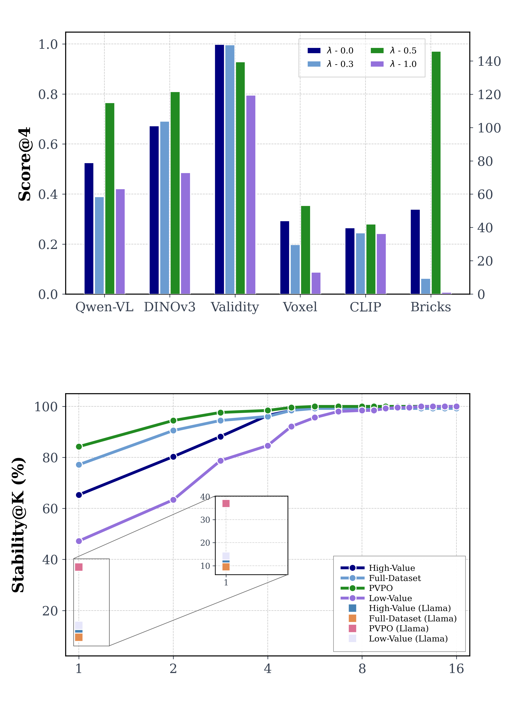
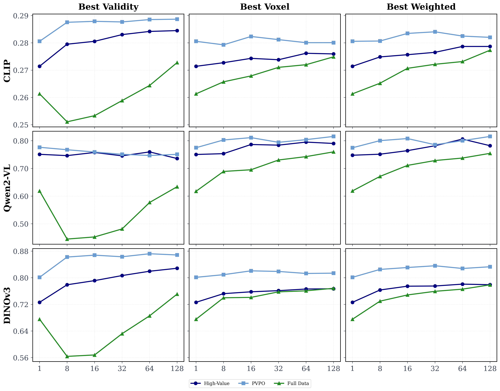
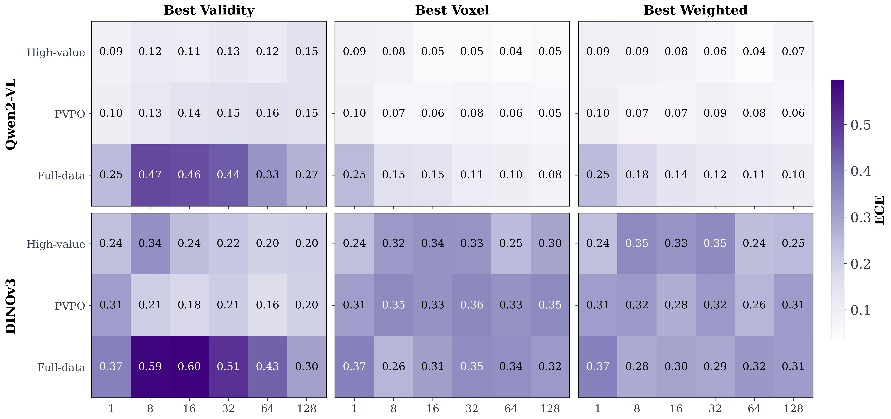
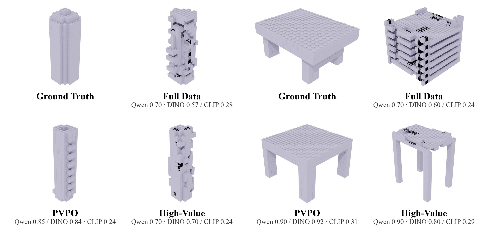
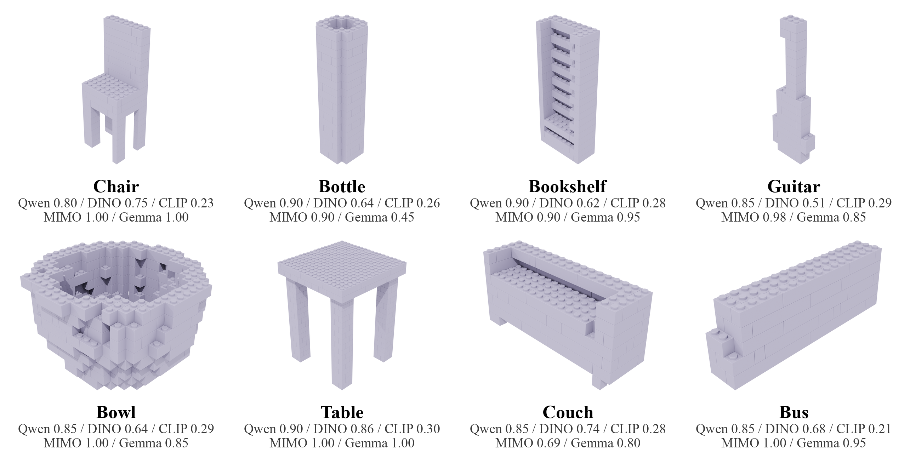

Sample-Efficient Post-Training for LEGO Spatial-Physics Reasoning
1HKUST(GZ) 2CUHK 3ZODA
†Equal contribution
We study how high-value data selection, physics-aware reinforcement learning, and test-time regeneration improve language-model generation of text-geometric aligned LEGO brick assemblies.
Abstract
Large language models can generate executable LEGO assembly programs from text, but their performance is strongly affected by noisy supervision and shortcut-prone training data. We identify a PhysHack phenomenon: models may achieve high physical validity while failing to preserve object-level semantics. To address this, we propose a sample-efficient post-training framework that combines value-guided data selection with Physics--Voxel Policy Optimization (PVPO). We first select only 5% high-value demonstrations using VLM semantic scores and diversity, then optimize models with a coupled reward combining physical validity and voxel-space geometric alignment. Experiments show that our method improves semantic alignment, geometry fidelity, and stability while using substantially less data than full-scale training.
Problem: PhysHack
LEGO Brick Assembly asks models to generate building steps that are both physically stable and match the prompt. PhysHack is when the model only follows the rules of assembly, but ignores the intended shape or meaning.
A model can be physically valid without being semantically correct.
Focusing only on physical validity can lead to generic or misaligned results. This work combines careful data selection and a reward that considers both physics and geometry to improve outcomes.
Methods
Value-Guided Data Selection
This selection strategy is data-efficient: High-Value VLM + Diversity uses only 5% of the data but improves semantic alignment over noisy full-data supervision. Table 1 is shown in full below.
| Setting | Qwen2.5-3B-Instruct | Llama-3.2-1B-Instruct | ||||||||||
|---|---|---|---|---|---|---|---|---|---|---|---|---|
| Qwen-VL ↑ | CLIP ↑ | DINOv3 ↑ | Physics ↑ | Voxel ↑ | Bricks | Qwen-VL ↑ | CLIP ↑ | DINOv3 ↑ | Physics ↑ | Voxel ↑ | Bricks | |
| Full dataset | 0.59 | 0.26 | 0.67 | 0.93 | 0.32 | 196 | 0.67 | 0.27 | 0.74 | 0.96 | 0.35 | 177 |
| Diversity-only | 0.58 | 0.26 | 0.66 | 0.95 | 0.32 | 163 | 0.55 | 0.25 | 0.66 | 0.94 | 0.31 | 199 |
| Random subset | 0.56 | 0.25 | 0.64 | 0.91 | 0.28 | 176 | 0.58 | 0.25 | 0.67 | 0.95 | 0.32 | 194 |
| Low-value VLM | 0.51 | 0.22 | 0.64 | 0.85 | 0.25 | 144 | 0.28 | 0.22 | 0.57 | 0.87 | 0.29 | 334 |
| Shortest responses | 0.50 | 0.24 | 0.65 | 0.91 | 0.22 | 33 | 0.49 | 0.24 | 0.62 | 0.89 | 0.22 | 38 |
| Lowest perplexity | 0.45 | 0.25 | 0.56 | 0.88 | 0.22 | 136 | 0.64 | 0.27 | 0.74 | 0.97 | 0.30 | 140 |
| Longest responses | 0.44 | 0.23 | 0.57 | 0.86 | 0.26 | 346 | 0.48 | 0.25 | 0.62 | 0.91 | 0.26 | 351 |
| High-Value VLM | 0.70 | 0.27 | 0.72 | 0.86 | 0.30 | 162 | 0.70 | 0.27 | 0.72 | 0.80 | 0.26 | 205 |
| High-Value VLM + Diversity | 0.72 | 0.26 | 0.70 | 0.86 | 0.31 | 184 | 0.74 | 0.27 | 0.76 | 0.89 | 0.32 | 181 |
| PVPO | 0.77 | 0.28 | 0.80 | 0.93 | 0.35 | 146 | 0.67 | 0.27 | 0.74 | 0.97 | 0.35 | 179 |
PVPO: Physics-Voxel Policy Optimization
PVPO jointly optimizes physical validity and voxel-space geometric alignment. The physical reward measures the fraction of valid bricks, while the voxel reward measures shape agreement with the target construction using symmetric voxel-space distance.
In the main experiments, λ = 0.5 provides the best balance between physical feasibility and structural fidelity. The ablation below visualizes how the voxel weight changes semantic alignment, physical validity, voxel alignment, and generated-brick count.

Results
The main result is sample-efficient improvement: only 5% high-value data plus PVPO surpasses full-data training on semantic alignment and geometry while preserving physical validity.
Test-Time Scaling on Physics–Structure Alignment.
Increasing the test-time sample budget improves physics--structure alignment by giving the model more opportunities to select generations with stronger visual-semantic and geometric scores under best@k selection.

Calibration
Confidence calibration compares different best@k selection mechanisms against semantic alignment metrics, diagnosing whether confidence tracks structural and visual quality.

Qualitative Gallery
The qualitative comparison is the most direct view of the method: PVPO and high-value data reduce collisions and improve object-level structure compared with full-data training.


BibTeX
waiting for addingPaper
Paper link will be added when available.
Code
Code link will be added when available.